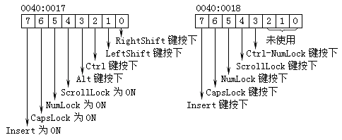
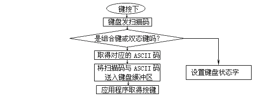

相对于键盘缓冲区而言，"键盘状态字"要简单得多，这是一个16位的数据，位于逻辑地址0040H:0017H处，各个位为1时的定义如图6-12所示：

键盘状态字的变化可以用DEBUG来观察：
C:\ASM\>DEBUG[Enter] -d40:17 18[Enter] 0040:0010?00-00?.. （按下Caps Lock） -d40:17 18[Enter] 0040:0010?40-00?@. （再按下Scroll Lock） -d40:17 18[Enter] 0040:0010?50-00?P. （再按下Insert） -d40:17 18[Enter] 0040:0010?D0-00?.. -d40:17 18[Enter]（按住左Shift不放，再按下Enter键） 0040:0010?D2-00?..
由实验可知键盘状态字的Bit0－Bit3位反映了开关键的状态，而Bit4－Bit15是动态的，只在各键按下时设置，放开键后便重新发复位了。
至此我们已经把键盘输入的情况大概讨论了一便，可以看到一个键由按下直至被应用程序收到大致经过了如图6-13所示的一个过程：
通过这一节的学习，大家还可能会发现这样一个现象：我们所关心的一些重要的系统数据好象都放在了0040H段中，前面我们讨论定时的时候也提到过系统时钟计数值也位于40H段内，那么40H段究竟有什么不寻常的地方呢？
其实40H段并没有什么不寻常之处，我们知道在启动PC时CPU首先执行ROM内的程序，这段程序用于完成系统的检测以及DOS的启动。这段程序运行时总要保存一些检测结果和一些临时数据，这些数据当然不能放在ROM中，因此BIOS程序就在中断向量表的上面开僻了一块空间专用于保存自己的数据，我们一般称其为BIOS数据区，这便是40H段的由来。本书的附录中列出BIOS数据区的详细内容，需要时大家可以查阅。

| 功能号 | 用途 | 说明 |
| 00 | 等待键盘输入字符 | AL=ASCII码 |
| AH=按键扫描码 | ||
| 01 | 从键盘缓冲区内读一个字符 | ZF=0：AL=ASCII码 |
| AH=按键扫描码 | ||
| ZF=1：缓冲区内无字符 | ||
| 02 | 取键盘状态字低8位 | AL=键盘状态字低8位 |
根据表6-5可知1号功能用于判断键盘缓冲区是否有字符可供读出，2号功能用于取得键盘状态字的低8位。这两个功能看上去好象不大常用，实际上1号功能还是十分有用的。请考虑编制这样一个程序：打开定时器发出10秒钟的声音（频率不限），在这十秒钟内若Esc键按下则关闭定时器并结束程序，否则10秒钟后停止发声并结束。
解决这个问题已不能使用16H中断的0号功能了，因为这个功能在没有键按下时会循环等待，所以程序应用这个功能就不能完成10秒定时发声。怎样才能达到要求？我们可以设想如果能够在键盘的确有键按下时才调用16H中断的0号功能，而在无键按下时去完成定时工作，这样就可解决问题。这里就要用到16H中断的1号功能了。请看BEEP.ASM程序。
code segment
assume cs:code
org 100h
main proc far
in al,61h ；打开定时器发声
or al,3
out 61h,al
mov ah,0 ；取得当前时钟计数
int 1ah
mov bx,dx ；当前时钟计数存入BX寄存器
add bx,182 ；当前时钟计数加182
delay:
mov ah,1 ；从键盘缓冲区内取字符
int 16h
jz next ；如键盘缓冲区空则转NEXT
cmp ah,1 ；如取到字符，判断是Esc键吗？
jz exit ；是Esc键转EXIT
next:
mov ah,0 ；取得时钟计数
int 1ah
cmp bx,dx ；到时间了吗？
jnz delay ；未到时间，转DELAY继续等待
exit:
in al,61h ；停止发声
and al,0fch
out 61h,al
mov ah,4ch ；结束程序
int 21h
main endp
code ends
end main
这个程序没什么难点，无非是在前面讨论的定时算法基础上加入了键盘输入判断，以此来决定何时中断定时而处理键盘输入。到这里我们这一节的内容也就结束了，要注意的是还有一些有关键盘的功能调用是由DOS为我们提供的，这些内容我没有讲解，大家可以自己找资料研究。
在这一章里我们详细地研究了有关显示输出与键盘输入的内容，和其它书籍不同的是我们把BIOS和硬件作为主要研究的对象而忽略了DOS。我这样做是有原因的：
（1）汇编语言本身就是面向硬件的语言，这就要求我们必须要对系统硬件有十分深入的了解，这样才可能编制出高效快速且色彩丰富的程序来；
（2）DOS的寿命还有多长现在还是未知数，WINDOWS95已经推出，更新的操作系统还会出现，新的操作系统是不是还保持对DOS的兼容呢？我想即使新的操作系统仍然兼容DOS，使用DOS的功能调用也没有什么优势可言，因此笔者忽略了DOS。况且从形式上看BIOS中断调用与DOS中断调用并无区别，研究DOS的功能调用也并不困难。